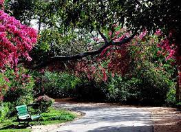
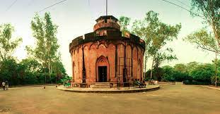
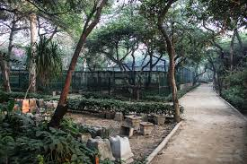

  
Northern Ridge biodiversity park, in Delhi Ridge of Aravalli range is a 87 hectares biodiversity area in the Northern Ridge (also called Kamla Nehru Ridge or forest) in Delhi, India. It lies in the Northern Aravalli leopard wildlife corridor.Delhi has more than 7,884 hectares of fragmented forests, which are deprived of wild animals due to the unplanned urbanisation. Of the over 400 wetlands of Delhi, fewer than 3 or 4 major ones existed in 2014. In 2015, Delhi already had Aravalli Biodiversity Park and Yamuna Biodiversity Park. Delhi Development Authority (DDA) engaged the scientists of Delhi University to develop four more biodiversity parks in Delhi, including the Northern ridge biodiversity park (Kamla Nehru Ridge), Tilpath valley biodiversity park, Neelahauz biodiversity park and phase-2 of the Yamuna Biodiversity Park.It was restored in 2014–16 on 87 hectares of Kamla Nehru Ridge (also called Northern Ridge) near Delhi University.[1][6] The ridge was infested with the invasive species of prosopis juliflora (Vilayati Babul or Kikar of Mexican origin), which were planted in the 1920s by the Britisher colonisers to rehabilitate the wasteland. Prosopis juliflora has caused the depletion of the water table due to its 15-m-deep root system, resulting in the death of 450 native species as well as the biodegradation of the flora and fauna. With the view to reintroduce 5,000 native plant species which existed 150 years ago in the ridge, the Vilayati Kikar was replaced with 15 native plant species in 2014.[7] Additional 3-layered native plant species are being planted.Some of the native species being replanted at several Delhi ridges to replace the invasive Vilayati Kikar include mahua, haldu, sheesham, bael, other shrubs and grasses.Several ridges of Delhi are being restored to revive the native species including leopard, Indian rock python, jackals, neelgai, mongooses, porcupines, small Indian civet, gecko, Sirkeer malkoha cuckoo, nightjar, Indian paradise flycatcher.